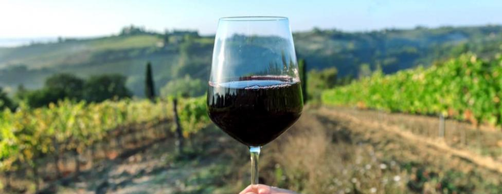

El vino es la bebida que se obtiene de la fermentación alcohólica total o parcial, del jugo de uvas maduras. El vino esta formado por diferentes componentes, de los cuales el principal es el agua, que esta presente al rededor de un 85%. El segundo componente más importante es el alcohol, que surge gracias a la fermentación, le da cuerpo y aroma al vino.
